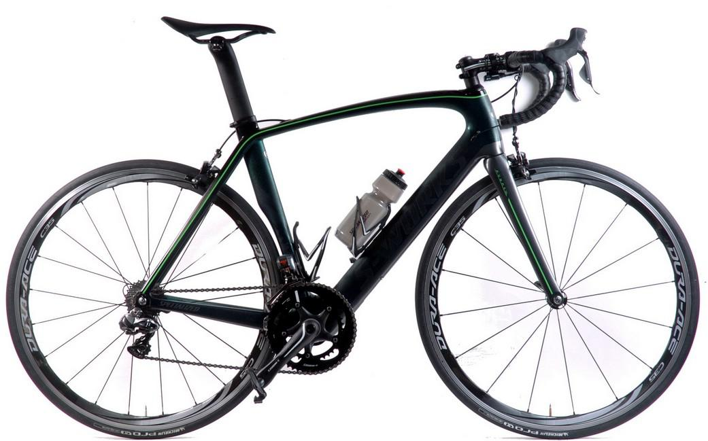
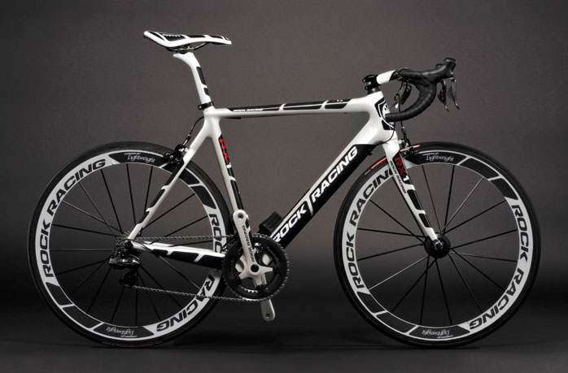
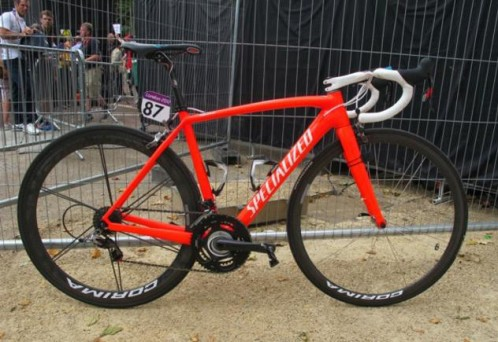
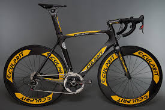

The road bike is the most common bicycle that people use to commute with. Road bikes come with multi-gears that make climbing hills a little less painful and accelerating downhill a lot more fun.
Road bikes normally come with thin tires. Thin tires has less surface area that comes in contact with the ground which creates less friction and less friction equates to more speed. This makes the bike more efficient in terms of traveling far distances with less energy.
Reasons you may want a road bicycle: Fast(fastest type of bike), efficient(less energy per distance), and lightweight(Can carry around if needed). Reasons you may not want a road bike: Comfort(you'll feel all the bumps on the ground), Maintenance(the chain often pops out of alignment when switching gears)
   